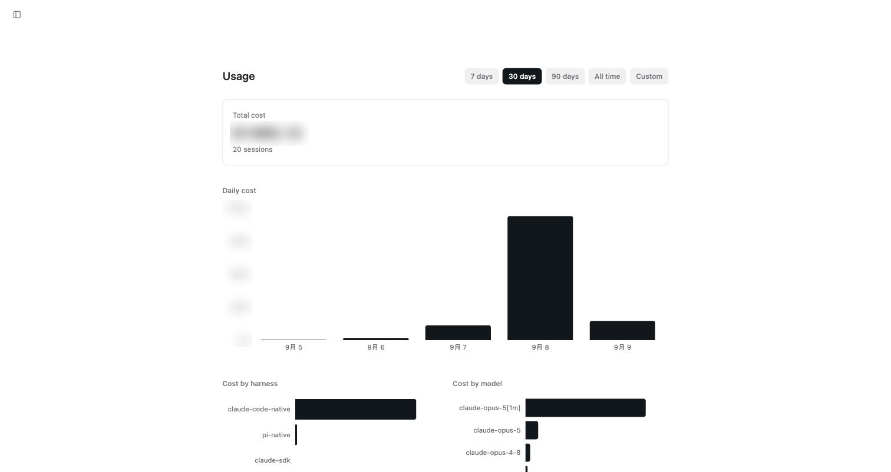

Usage：看懂每一塊錢花在哪
為何需要本章
Omnigent 自己不收你錢，但它指揮的每一個框架都用你自己的帳號或金鑰在跑。錢是實際從你的模型供應商帳戶扣的，只是扣的時候你不在現場——尤其是排程任務，它半夜自己開工，你隔天早上才看到結果。
側邊欄的 Usage 就是那本帳。這一章教你讀它：四個區塊各自回答什麼問題、看到數字之後可以做哪些具體調整，以及哪些問題這一頁其實回答不了。
這一章跟第 12 章是一組的。Usage 頁告訴你「花了多少」，規則告訴系統「最多能花多少」。先看帳再設上限，順序反過來只能亂猜金額。
核心觀念：這頁算的是模型花費，不是訂閱費
先把「這頁在算什麼」界定清楚，不然後面每個數字都會被誤讀。
用量（Usage）：Omnigent 對它經手的模型呼叫所累積出來的花費統計。單位是美金——第 12 章的 Session Cost Budget 明確以累計的美金花費設閘，兩處算的是同一種錢。
三個推論：
- 這頁的錢不是 Omnigent 的訂閱費，也不是這台伺服器的機器成本。它是你的模型供應商那一側的消耗。
- 因此它跟供應商帳單不會逐分逐角吻合。方向與比例是可靠的，絕對值當估算看。
- 它只涵蓋經過 Omnigent 的呼叫。你在別的地方直接用同一組金鑰花掉的錢，不會出現在這裡。
還有一件本書不會替你補上的事：這份統計是每個人各自一份、還是整台合計，2026-09-09 的實機記錄沒有涵蓋，本書因此不下定論。你在自己的環境上要確認很簡單：請另一位成員同時打開 Usage，比對兩邊的 Total cost 是否一樣。

四個區塊各自回答什麼
Usage 頁上的內容固定是四塊，由上而下。每一塊回答的是不同的問題，別把它們當成同一張圖的四種畫法：
| 區塊 | 它回答的問題 | 你據此做的決定 |
|---|---|---|
Total cost | 這段期間總共花了多少，跑了幾個 session | 算出「每個 session 平均多少錢」，這是設預算上限的基準 |
Daily cost | 錢是平均分布，還是集中在某幾天 | 找出異常尖峰那一天，回去翻那天開了什麼 |
Cost by harness | 哪一個框架吃掉最多 | 決定要不要把某類工作換到另一個框架 |
Cost by model | 哪一個模型吃掉最多 | 決定哪些工作可以降級到便宜的模型 |
Total cost 底下附帶的 session 數是這頁最被低估的數字。單看總額你只知道貴不貴，總額除以 session 數才知道貴在哪裡：是每個 session 都貴，還是有一兩個離群值把平均拉高。舉例來說，實機在三十天的期間看到的是二十個 session；同樣的總額，二十個 session 跟兩百個 session 的意義完全不同——前者代表單價高，後者代表用得兇。
期間怎麼選
頁面上方是期間切換：7 days、30 days、90 days、All time、Custom。同一份資料換個期間看，結論可能相反，所以選哪一個不是隨便按。
7 days：看「最近是不是出事了」。剛改過模型設定、剛開了新的排程之後，用這個。30 days：設預算上限的基準期間。一個月足以蓋掉週末與假日的起伏，又不會被三個月前的舊習慣稀釋。90 days：看趨勢。是穩定的、在爬升的、還是一次性的？只有這個長度看得出來。All time：回答「從開站到現在總共花了多少」。適合寫報告，不適合拿來設上限。Custom：對齊你自己的計費週期，或框住某一次事故的區間。
拿 All time 的平均值去設每日上限是常見錯誤。開站初期的試用期通常花得少，把它算進平均，會讓上限低到擋掉現在的正常工作。設上限請用 30 days。
開始之前
看帳之前先累積帳。剛裝好的環境打開 Usage 只會看到接近零的數字，那不代表便宜，只代表還沒開始用。
- 至少累積一週的實際使用，而且要包含你平常真的會做的工作類型，不是只有測試用的一句話。
- 如果已經在跑排程，把它跑過至少一個完整週期。排程的花費特徵跟人工操作不一樣：它穩定、可預測，但沒有人看著，所以它常常是月底那筆意外的來源。第 10 章講排程本身，這一章只負責看它花了多少。
- 手邊留著第 12 章的規則清單。這一章的結論多半會變成那邊的一條設定。
一次完整的看帳流程
-
先用 30 days 抓基準
側邊欄點
Usage，期間切到30 days。記下兩個數字：Total cost，以及它附帶的 session 數。兩者相除得到「每個 session 平均多少錢」。這個數字是後面每一步的量尺，寫下來。 -
看 Daily cost 找尖峰
看那張長條圖是平的還是有明顯尖刺。有尖刺就記下是哪一天，回到那天的 session 清單去找當天開了什麼——通常是某個一路跑很久的長任務，或某個排程重複觸發。平的則代表花費由日常使用構成，該調的是習慣而不是抓兇手。
-
看 Cost by harness 決定要不要換框架
比對每個框架的花費跟它替你完成的工作量。某個框架佔了大半花費卻只負責少數任務，就值得檢討：是那類任務本來就重，還是它被拿去做了不適合的事。要換之前先讀第 17 章，換框架會連帶影響能不能用的功能。
-
看 Cost by model 找可以降級的工作
這一塊最容易換到現金。最貴的模型應該只出現在真正困難的工作上；如果它佔比很高，代表大量瑣事也在用它。做法有兩個：在 Composer 的模型下拉裡對簡單任務手動選便宜的模型（第 5 章），或直接開第 12 章的
Deny Trivial Tasks on Expensive Models讓系統自己判。 -
把結論寫回規則，然後一週後回來對
用第一步算出的平均值當基準，設定
Session Cost Budget（例如平均值的五到十倍）與Per-User Daily Cost Budget。一週後回到Usage，用7 days看曲線有沒有下來。沒有回頭驗證的調整，等於沒有調整。
怎麼確認做對了
做完上面五步，你手上應該有四個具體的東西：
- 一個寫下來的「每 session 平均花費」數字，而不是「大概還好」這種印象。
- 對
Daily cost上每一根明顯的尖峰，你都說得出那天發生了什麼。說不出來的尖峰就是還沒查完的線索。 Cost by harness與Cost by model的第一名，都是你認同它應該排第一名的那一個。不認同就是有調整空間。- 至少一條已經生效的花費類規則，而且你知道它的上限是怎麼算出來的。
故障排除
- 徵狀：
Usage頁一片空白或都是零。先確認期間不是切在一個沒有使用紀錄的區間（例如7 days，但你這週都沒用）。切到All time若還是零，代表這台從來沒有成功完成過任何一次模型呼叫，那是連線或框架設定的問題，不是統計的問題，往第 6 章與第 18 章找。 - 徵狀：數字跟供應商帳單對不起來。這是預期內的。這頁只統計經過 Omnigent 的呼叫，你在其他工具用同一組金鑰花的錢不會計入；計價與換算方式也可能有落差。把它當成分配比例的依據，不要當成對帳單。
- 徵狀：某一天的成本突然暴衝，但那天沒人上班。第一個要查的是排程。無人值守的任務照樣花錢，而且會安靜地重複。到
Automations的清單頁把該任務切到Paused，觀察隔天的Daily cost有沒有掉下來，就能確認是不是它。 - 徵狀：
Cost by harness裡出現你以為沒在用的框架。框架目錄裡有十一種，沒設定好的會標needs setup；會出現在花費統計裡，代表它確實被設定過也被用過。可能是別的成員在用，也可能是某個排程任務的Runs with設成了它。 - 徵狀：開了花費上限之後，工作被擋但
Usage上的數字看起來還沒到上限。兩者的計算範圍不同：Per-User Daily Cost Budget是以 UTC 的一天為界，跨所有 session 累計；而你在Usage上看的可能是別的期間或別的切分方式。比對前先把期間對齊，並記得台灣時間比 UTC 早八小時。
固定來源
本章的產品邊界說法以下列來源的該 commit 內容為準。
Usage 頁的期間切換與四個區塊，以及實機在三十天期間觀察到的 session 數，來自 2026-09-09 對正式站的實機記錄，整理在本倉庫的 docs/research/ui-facts-2026-09-09.md。統計是否按成員拆分不在該記錄範圍內，本章因此沒有下定論。
常見問題
這頁的錢是誰在收？我要付給 WoowTech 嗎？
不是。Omnigent 不含模型額度，它指揮的每個框架都用你自己的帳號或金鑰，錢從你的模型供應商那邊扣。這頁只是把那些消耗整理成看得懂的樣子。自架的部署方式另外還有機器本身的成本，那個不會出現在這一頁。
可以看到是哪一個成員花的嗎？
頁面上的拆分維度是期間、每日、按框架、按模型，實機記錄裡沒有出現按成員拆分的區塊，本書不敢斷言它有或沒有。要按人控管花費，比較確定的路是第 12 章的 Per-User Daily Cost Budget，那條明確以擁有者當日的累計花費為判準。
排程任務的花費會算進來嗎？
會。排程跑的就是一般的代理 session，只是沒有人在旁邊看。這也是為什麼本章一直提醒你把排程跑滿一個週期再看帳：它是最容易被忽略、也最穩定累積的那一塊。懷疑某個排程是元兇時，把它切到 Paused 一天再回來比對 Daily cost。
我該多久看一次這一頁？
穩定之後每個月一次，用 30 days 對一次基準就夠。三種情況要提早看：剛新增排程、剛加入新成員、剛換模型或框架設定。這三件事都會改變花費結構，早看幾天，發現異常的成本就只是幾天而不是一個月。
如果我只想把錢壓下來，最有效的一件事是什麼？
看 Cost by model，把瑣碎任務從最貴的模型移開。多數環境的花費集中在少數幾個模型上，而其中相當比例的呼叫其實不需要那個等級。做法可以是人工在 Composer 挑模型，也可以開 Deny Trivial Tasks on Expensive Models 讓系統自己判。換框架通常影響比較小，因為真正的成本來自模型而不是外面那層。